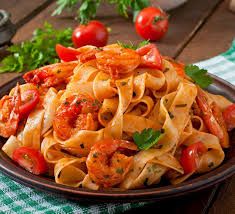

Pasta

Description
Authentic Italian pasta dishes are defined by simplicity, regional ingredients, and quality, usually served as pasta asciutta (with sauce), in brodo (in broth), or al forno (baked).
Ingredients
- Pasta al dente
- Extra virgin olive oil
- Garlic
- Tomatoes
Steps
- Boil Properly: Use a large pot with plenty of water. Once it reaches a rolling boil, salt it generously (it should taste like the sea).
- Keep it Al Dente: Check the package instructions but start tasting 1–2 minutes before the suggested time. The pasta should be firm, not mushy.
- Save Pasta Water: Before draining, reserve a cup of the starchy cooking water.
- Emulsify the Sauce: Add the cooked pasta directly into the pan with your sauce over medium heat. Add a splash of the reserved pasta water to emulsify and create a creamy, clinging sauce.
- Finish with Care: Remove from heat and stir in fresh herbs, high-quality olive oil, or cheese (like Parmesan or Pecorino) to finish.
Home